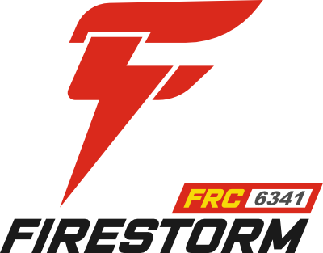
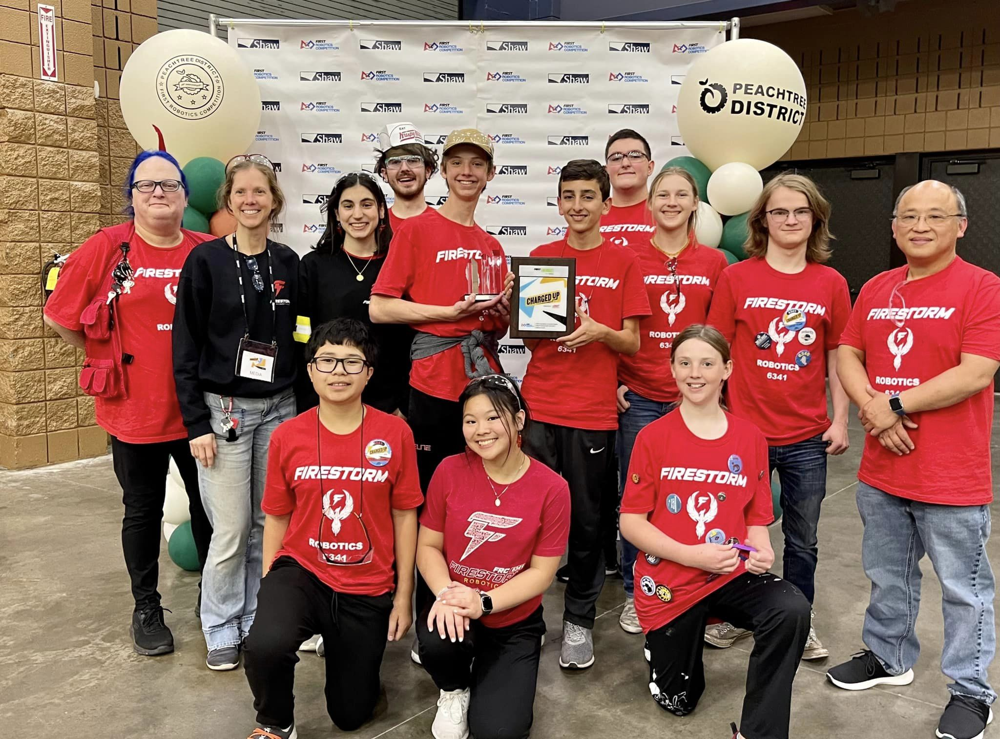

The server is temporarily down. This means you can't send suggestions or play multiplayer games. Thanks for the understanding!
About me
Table of Contents
Intro
Meet me: Luke White (often referred to as Pookie, don't ask). I'm (currently) a 13 year old who has a passion for programming. I'm currently member of Firestorm Robotics, FRC team 6341. I first started programming when my dad bought me a Python book. I loved it, but after I had completed the book, I didn't know how to continue programming. Fast forward to September of 2022 when a friend invited me to join a local robotics club. I was eager to join, not knowing what to expect of the club.
My time with Firestorm Robotics
When I first walked into the robotics building, I looked around and was immediately interested. The lead programmer met me and eventually got me started on C++. Being a young programmer who only had some Python experience, C++ seemed really complicated. But, after a few months, I was pretty fluent with it. So, when the 2023 FRC season came up, I felt ready to finally help out with the robot code. We all knew that this game would be code-reliant, and, with our design, complicated math.
There were many times when we felt like giving up, and while I didn't spend nearly as much time as others, we had a lot of times where we spend all day refining and debugging the robot. Finally, the night before the competition, we discovered something devestating.Our arm design was a four-bar, which relied on 2 motors and 2 sensors. However, there was a bug in the code which prevented one of the motors from running at full capacity. The easiest solution was just to lock the part of the arm that wasn't working, which meant that we were limited to the amount of game pieces that we could pick up. I had left early, but the rest of the team had stayed there till past midnight! We'd known not to get our hopes up, but we'd do our best.
The Dalton Event
Our first robotics event was in Dalton, GA. I was not sure how the competition would turn out, but I couldn't have predicted the ending. Each match starts out as 15s in Autonomous (where the robots are completely reliant on code) and the next 2m and 15s in Teleop (where the robots are controlled by humans). Each robot has to get inspected to make sure it is safe to put on the field. Our inspection took almost an hour! This meant that we couldn't test any of our components to our robot, which is why on our first match, we realized a fatal issue. Our robot has a swerve drive, which had 4 wheels; each wheel can go back and forth, but also can turn. This allows up to go in any direction without turning our robot's orientation. The sensors that know where the wheel's position is were not working, so when the robot got enabled, it spun out of control!
We tackled a bunch of other issues, but after a while, we had fixed them. By then, however, we were at the bottom of the leaderboard. I had no hope of us doing well, but then, we discovered something amazing. One of the tasks during Autonomous was to balance on a ramp (see video for details), which earned our team 12 points. We had written code that allowed us to auto-balance, but with all our issues, we hadn't had a time to test it out. The code was easy to write, so I had expected other teams to do the same. Little did we know that that one task would carry our team to 3rd place.
Enter in Qualifying match 24; our first successful auto ramp! We were all excited, knowing we might have a chance after all. We went on to win most of our matches, slowly ranking ourselves up to 3rd place! No one could have predicted that a small, 12 point task would have carried us that far. I was so glad that our team was actually doing well, and despite last night's discovery, we had actually managed to place some game pieces. After the event, our team had won the Innovation in Control award for our auto-ramping capabilities and our swerve drive code. Credit to Tyler Clarke; the lead programmer. He was the one who worked all the complicated math and who wrote our swerve library all by scratch!
